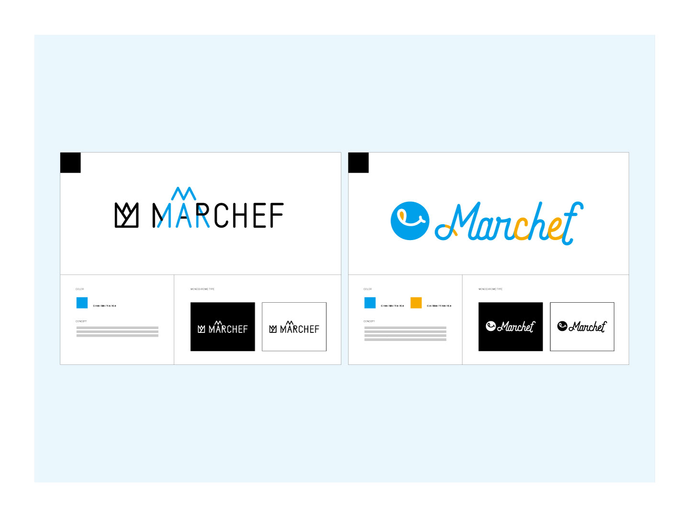

【実務実績】自社主催マルシェ「Marchef」

自社主催の食をテーマとしたイベント「marchef（マルシェフ）」のロゴ制作。プロモーション制作のメインデザイナーを決定するため、ロゴが社内で募集された。コンペで評価されたことで制作チームに参加。
株式会社しずおかオンライン／Marchef／2018.9.29-30
目的
自社主催イベント「marchef（マルシェフ）」のPR
ターゲット
30〜40歳・男女・ファミリー
デザインコンセプト
視認性を保ちつつ、静岡県民にとって親しみのある「富士山」と名産の「みかん」の形やカラーを取り入れる。統計上嫌いな人が少ない色の「青」を取り入れ、受け入れやすいロゴを心掛ける。
担当
デザイン
期間
| ロゴのデザイン初校（2案、コンペ用） | ：8時間 |
|---|---|
| プロモーション各種（ポスターなど）の制作 | ：2〜8時間 |
成果・工夫
- 経験豊富なデザイナーが参加する中、6人中2位となり採用されなかったものの、デザイン力が評価され制作チームに参加。チラシやポスターなどの制作に携わる。